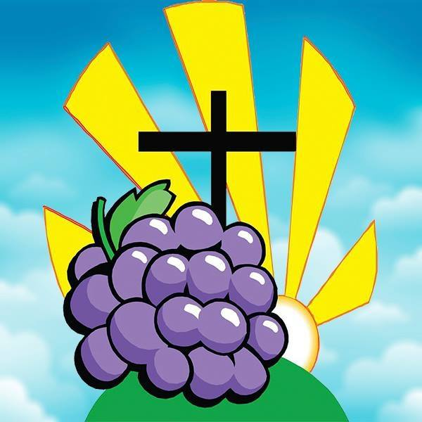

 Ministério Videira - Eventos
Home -
Contato -
Infantil -
Juventude -
Eventos -
Pregações -
Curso
Agenda de 2018
Janeiro
- Dias 11, 12 e 13 - Escola Bíblica de Férias a partir de 15h
Fevereiro
- Dia 17 - Aniversário do Ministério de Dança Kadosh a partir de 19h
Março
- Dia 8 - Comemoração do Dia da Mulher a partir de 19h
- Dias 22, 23 e 24 - Aniversário da Igreja a partir de 19h
Abril
- Dias 20,21 e 22 - Retiro Espiritual Encontro com Deus
Maio
- Mês da Família
- Quintas-Feiras - Palestras para a famíia
- 2º Domingo do mês - Dia das Mães
Junho
- Dia 23 - Encontro de Casais
Julho
- Dias 13 e 14 - Festa da Juventude
Agosto
- 2º Sábado do mês - Festa do Milho
- 2º Domingo do mês - Dia dos Pais
Setembro
- Mês de Missõoes
- Quintas-Feiras - Culto dirigido pelos departamentos
Outubro
- Dia 20 - Aniversário do Pr. Ronaldo
Novembro
- Dias 17 e 18 - Festividade do Ministério Infantil
Dezembro